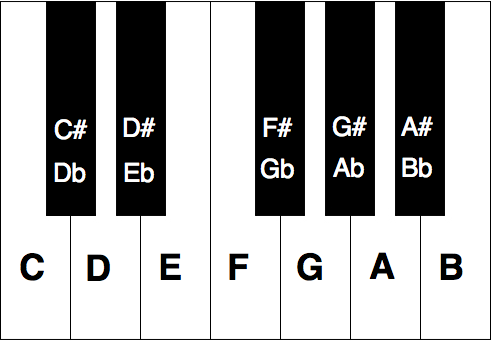

Música: história e teoria
(Breve) história
A música existe desde os primórdios da humanidade. Estima-se que surgiu em época semelhante à pintura e outras expressões culturais, por volta de 60 mil anos atrás. Ela teria surgido a partir da criação de padrões em torno de sons que aconteciam naturalmente e que aos poucos foram ganhando significados e funções culturais. Os instrumentos mais antigos são a voz, sopros e percussão. Flautas com mais de 40 mil anos já foram encontradas em escavações.

Flauta de 40 mil anos atrás, encontrada em Ljubljana, Eslovênia.
Em cada região do mundo, a música se desenvolveu de formas diferentes. As tradições com que temos mais contato, a européia e a africana, são fundamentais para entendermos os estilos e influências musicais que temos na música popular contemporânea. Na história da música européia, vemos a importância do papel da igreja e da religião na expressão musical, passando por cantos gregorianos e peças religiosas, até sua negação na Reforma protestante e o crescimento do mundo secular e da burguesia com o desenrolar do Iluminismo. Isso impactou a música, com estilos diferentes surgindo em resposta a cada um desses momentos.
A música africana teve profundas influências na América, devido à escravidão negra. As músicas trazidas pelos negros definiram a música popular contemporânea dessas regiões são a raíz de estilos musicais como jazz, samba, rumba, blues, baião, rap e muitos outros mais. Para conhecer mais da música africana, recomendo o site Awesome Tapes From Africa.
Elementos da música
Para melhor falar sobre música, é importante compreender diferentes elementos que a compõem. Vamos começar definindo notas e depois vamos falar da relação entre melodia e harmonia.
Nesta música de John Coltrane, o foco está na melodia.
Notas são a representação de um som. Elas definem variações em sua altura, intensidade e duração. Vamos começar falando da altura das notas, que é o sentido mais comum a que nos referimos a elas. Todos conhecem a sequência básica de notas:
DÓ - RÉ - MI - FÁ - SOL - LÁ - SI - DÓ
C - D - E - F - G - A - B - C
A diferença de altura entre as notas é medida em tons e semitons (1 tom = 2 semitons). As notas básicas podem ser acrescentadas de acidentes, indicando alterações de um semitom em sua altura. Os acidentes são o sustenido # (um semitom mais agudo) e o bemol b (um semitom mais grave).

Melodia
A melodia é relacionada à frequência de um som e como essa se desenvolve no tempo. É tradicionalmente organizada em notas e no intervalo entre elas notas (a sua diferença em frequência). Essas sequências e relações podem ser convencionadas em escalas (como a maior e menor, tão comuns na música popular contemporânea) ou em modos (uma estrutura baseada nas escalas e harmonias gregas).
Harmonia
A harmonia é a relação entre sons simultâneos e como sua combinação gera resultados diferentes para o ouvinte. Quando notas são tocadas juntas, chamamos elas de acordes e esses acordes podem ter funções diferentes dentro de uma sequência musical. Podem servir de acompanhamento ou para gerar tensão e relaxamento (exemplo: tônica e dominante). Uma tonalidade ou um modo são utilizados para criar um campo harmônico, ou seja, uma sequência de acordes relacionada com aquela escala específica. Esse campo é então utilizado para estruturar a harmonia de uma peça musical.
Nesta peça de Vivaldi, podemos observar a relação entre melodia e harmonia.
Ritmo
O ritmo é o desenvolvimento do som no tempo. Através desse elemento podemos observar como a duração e intensidade de um som, ou de uma sequência de sons, se combinam para formar padrões. Para entender melhor ritmos, podemos pensar na métrica de uma música. Se forma semelhante à métrica poética, a métrica em música a divide partes, chamadas de compassos, que são compostos de batidas ou tempos. Algumas fórmulas de compasso bastante comuns na música contemporânea ocidental são 4/4 e 3/4.
Textura
A textura de uma peça seria uma percepção mais geral da mesma. Ela está relacionada à combinação da melodia, harmonia e ritmo e é utilizada para falar sobre a densidade de uma peça. Alguns exemplos de texturas são:
- Monofonia: uma única melodia sem harmonia ou acompanhamento de outro instrumento.
- Homofonia: duas vozes semelhantes, mas com pequenas diferenças melódicas e uma sobreposição harmônica. O foco ainda está em uma melodia específica.
- Heterofonia: duas vozes criando variações de uma mesma melodia, misturando harmonia e ritmos.
- Polifonia: várias vezes realizando melodias diferentes que se complementam de forma harmônica, seja através de semelhanças ou de contrapontos.
Nesta música de Ali Farka Toure e Toumani, ouvimos um exemplo de alternância entre heterofonia e polifonia.
Estrutura
A estrutura de uma peça musical define as diferentes partes, que combinadas, formam o todo da peça. Na música popular contemporânea, vemos a estrutura verso-refrão em muitas peças. Outras estruturas se organizam em seções (AABA) ou compassos (blues de 12 compassos) que se alternam para desenvolver determinadas ideias, tensões e uma experiência musical.
Timbre
O timbre e instrumentação, como discutido na aula sobre percepção musical altera completamente o significado e experiência de uma determinada peça musical. A escolha, performance e elaboração de um determinado timbre é fundamental para a criação musical. Para desenvolver melhor a percepção desse elemento da música, vale a pena ver como compositores fazem para criar e recriar certos timbres. Veja a diferença que a instrumentação causa entre as duas versões da mesma música abaixo.